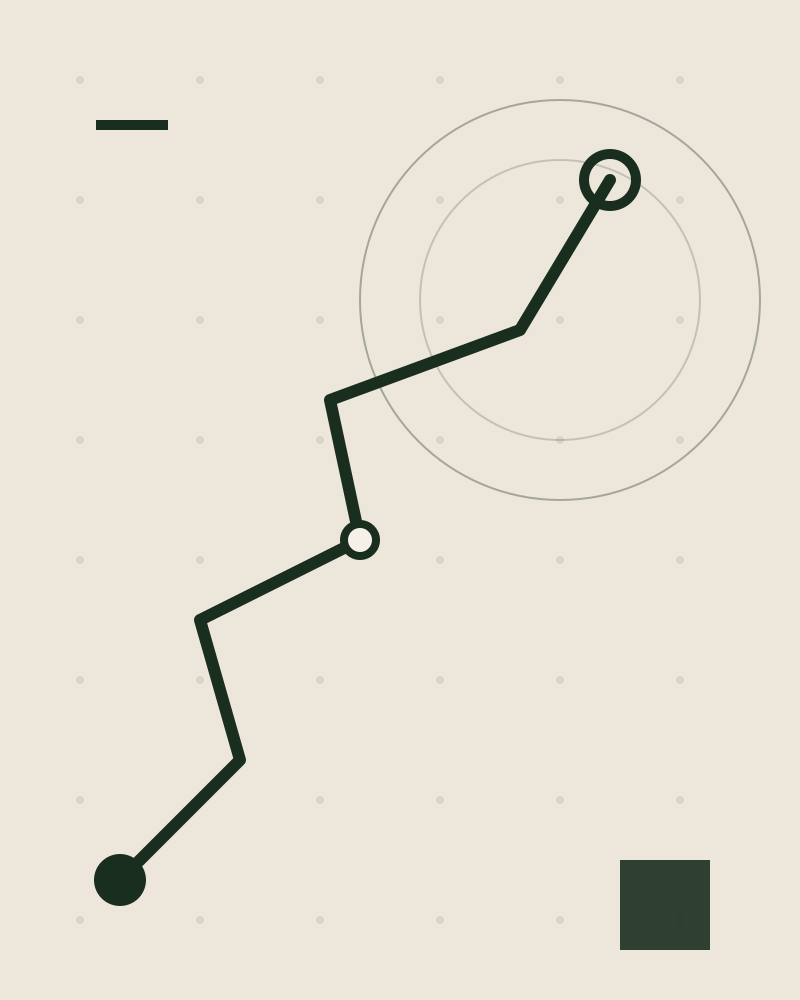

CITY CYCLING COMMUTE REPORT · 2025
一年 492 次单程通勤，自行车承载了其中的 38%。这份报告记录里程、节奏，以及两个车轮带来的改变。
示例数据 · 仅用于版式与图表演示 · 2026 年 9 月编制
VOL. 2025 / FOREST

01 · 总览 OVERVIEW
CYCLING COMMUTE 2025
全年骑行里程
1128km
相当于北京到上海高铁里程（约 1318 km）的 86%，全部由两条腿完成。
骑行通勤天数
94天
占全年 248 个工作日的 38%。
平均单程距离
6.0km
恰好落在"骑行比地铁更快"的黄金区间。
减少碳排放
162kg
约等于 9 棵成年乔木一年的固碳量。
示例数据 · 里程与碳减排按单程 6 km、替代燃油车 0.144 kg/km 口径估算。
02 · 出行方式 MODE SHARE
CYCLING COMMUTE 2025
按单程次数统计全年通勤方式，骑行首次超过地铁，成为第一选择。
492
次 · 全年通勤单程
骑行
38% 187 次
地铁
27% 133 次
步行接驳
14% 69 次
公交
11% 54 次
网约车
10% 49 次
示例数据 · 占比按单程次数计；环图扇区弧长由占比换算（周长 1570.8）。修改数值请走批注流程，图形不会随文字就地更新。
03 · 逐月节奏 MONTHLY
CYCLING COMMUTE 2025
2025 年
2024 年
12
9
6
3
0
1月
2月
3月
4月
5月
6月
7月
8月
9月
10月
11月
12月
示例数据 · 单位：天 / 月，统计自然月内骑行通勤天数（往返计 1 天）；2025 年合计 94 天，2024 年合计 75 天。
04 · 变量 VARIABLE
CYCLING COMMUTE 2025
二月寒潮与七月暴雨，两个月合计只骑了 10 天，不及五月一个月。路线可以优化，装备可以升级，季节只能等待。
10天
二月 + 七月，全年低谷合计
11天
五月单月，全年峰值
示例数据 · 天数口径同第 03 节。
05 · 距离 DISTANCE
CYCLING COMMUTE 2025
六个常活动区域的平均单程骑行距离，跨度接近一倍。
亦庄
10.4
西二旗
9.2
望京
8.6
中关村
7.4
国贸
6.8
金融街
5.1
示例数据 · 单位：km，条宽按数值与最大值（10.4）的比例计算。
06 · 季度里程 QUARTERLY
CYCLING COMMUTE 2025
温暖的月份骑走了大半里程，四季度靠意志力维持。
216
2025 Q1
18 个骑行日
348
2025 Q2
29 个骑行日
276
2025 Q3
23 个骑行日
288
2025 Q4
24 个骑行日
示例数据 · 单位：km，柱高按数值与最大值（348）的比例计算；四季度合计 1128 km，与第 01 节总里程一致。
07 · 目标 GOALS
CYCLING COMMUTE 2025
年初自设的五个目标：里程类全部九成以上，体验类明显落后。
骑行天数
94 / 100 天
94%
总里程
1128 / 1200 km
94%
碳减排
162 / 180 kg
90%
新路线探索
18 / 24 条
75%
周末休闲骑
17 / 25 次
68%
示例数据 · 目标为年初自设；进度 = 实际 / 目标，条宽按同一比例计算。
08 · 观察 NOTES
CYCLING COMMUTE 2025
路线记忆
骑过的街道不再只是通勤通道，而成了城市地图里属于自己的那一层。
定性 · 感受
天气敏感
开始留意风向、能见度和雨后路面的反光，比天气预报更早感知季节更替。
定性 · 习惯
时间确定感
骑行让通勤时长变得可预期，不再为换乘、限流和不可控的等待焦虑。
定性 · 心态
版式说明：本页为纯定性观察，没有可验证的量化数据——按"内容决定组件"的规范，本页不使用任何图表，以文字排版承载。无数据内容严禁编造数字塞进图表。
09 · 展望 NEXT YEAR
新年目标：骑行 120 天，里程 1500 km，把三条新路线写进日常。
示例数据 · 城市骑行通勤年度数据报告 · 完
END / FOREST